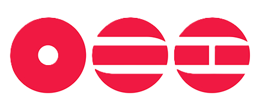
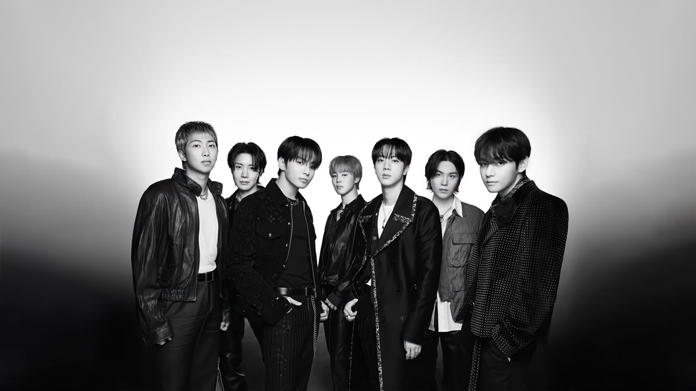
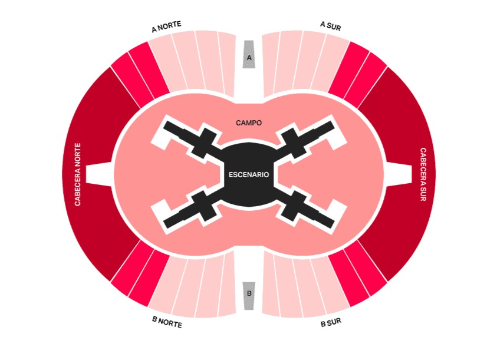

"Teamwork makes the dream work"
21, 23 y 24 de Octubre de 2026. Tres estadios completamente agotados.
El concierto del 24 de octubre será transmitido en vivo en cines de todo el mundo.
Acceso exclusivo a la prueba de sonido previa al show para los sectores seleccionados.
Proyectos especiales, fanchants y toda la pasión del público más ruidoso del planeta.
El fenómeno global llega por primera vez a la Argentina con tres noches históricas en el Estadio Único de La Plata.
Por primera vez en la historia de sus giras, la producción del ARIRANG World Tour introduce un diseño de escenario abierto de 360 grados dispuesto en el centro del recinto.

Estadio Único Diego Armando Maradona